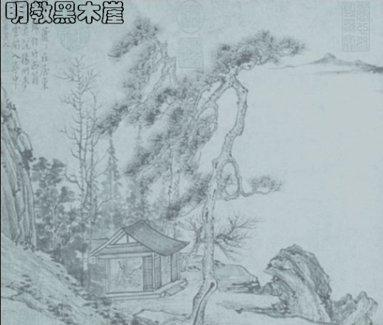

明教第二届名人杯慢棋赛名次
#1 明教第二届名人杯慢棋赛名次作者：26 发表时间：2009-1-1 21:40:42
明教第二届名人杯慢棋赛（10大妖刀慢棋赛）
参赛名单：
A组光明顶：天京 木月 潇洒 多情 失落 逆刃 花影 湘女 偷心 烟雨 真主 『五珠の
B组黑木崖：空龙 真心 无尽 轻骑 天涯 少少 顾炜 星雨 春天 思雨 色望 虚无
［ 失落刀 于 2009-1-1 22:11:53 时奖励此帖[金币加 20 威望加1］
#2 Re:明教第二届名人杯慢棋赛名次作者：26 发表时间：2009-1-1 21:42:30
A组光明顶：前六名名单：烟雨 天京 逆刃 木月 潇洒 花影B组黑木崖：前六名名单：轻骑 无尽 空龙 少少 顾炜 春天
烟雨、轻骑分别获得光明顶组名人、黑木崖组名人称号。
［ 失落刀 于 2009-1-1 22:00:22 时奖励此帖[金币加 20 威望加1］
#3 Re:明教第二届名人杯慢棋赛名次作者：26 发表时间：2009-1-1 21:45:31
09年明教名人杯慢棋大赛A组人选为本次两个组别前六名。竞争更大，挑战更强，奖金更高。［ 失落刀 于 2009-1-1 22:00:47 时奖励此帖[金币加 20 威望加1］
#4 Re:明教第二届名人杯慢棋赛名次作者：26 发表时间：2009-1-1 21:47:56
烟雨、轻骑，天京、无尽，逆刃、空龙获得本次比赛名次奖金奖励。［ 失落刀 于 2009-1-1 21:59:44 时奖励此帖[金币加 20 威望加1］
#5 Re:明教第二届名人杯慢棋赛名次作者：26 发表时间：2009-1-1 21:53:09
祝贺烟雨、轻骑获得明教第二世名人称号！［ 失落刀 于 2009-1-1 21:59:14 时奖励此帖[金币加 20 威望加1］
#6 Re:明教第二届名人杯慢棋赛名次作者：失落刀 发表时间：2009-1-1 21:58:51
祝贺烟雨、轻骑获得明教第二世名人称号！#7 Re:明教第二届名人杯慢棋赛名次作者：失落刀 发表时间：2009-1-1 22:11:34
据无尽表示，下次慢棋比赛规则将考虑采用那氏52。#8 Re:明教第二届名人杯慢棋赛名次作者：笑雨辰 发表时间：2009-1-1 23:39:55
祝贺烟雨、轻骑获得明教第二世名人称号！#9 Re:明教第二届名人杯慢棋赛名次作者：侯军学棋 发表时间：2009-1-2 0:36:46
=======上图对应的爱五子棋谱代码如下，以便你拆解：========
h8h9k9i9
======================================================残刀求解，这个4黑怎么必胜两打点在哪里
#10 Re:明教第二届名人杯慢棋赛名次作者：战龙在野 发表时间：2009-1-2 11:18:29
 我弱弱的问一句，明教这个黑社会总堂在哪里？在哪里开设娱乐场所？扛把子是哪个？
我弱弱的问一句，明教这个黑社会总堂在哪里？在哪里开设娱乐场所？扛把子是哪个？#11 Re:明教第二届名人杯慢棋赛名次作者：无尽 发表时间：2009-1-2 12:04:24
7楼的传闻不用负责的
明教简介：ShowPost.asp?ThreadID=2361
以及第二届名人杯慢棋赛ShowPost.asp?ThreadID=3835
#12 Re:明教第二届名人杯慢棋赛名次作者：快乐天羽 发表时间：2009-1-3 16:00:15
我弱弱的问一句，明教这个黑社会总堂在哪里？在哪里开设娱乐场所？扛把子是哪个？
这句经典，哈哈，绝对经典。
#13 Re:明教第二届名人杯慢棋赛名次作者：失落刀 发表时间：2009-1-5 22:39:35
#14 Re:明教第二届名人杯慢棋赛名次作者：五子酷 发表时间：2011-10-13 15:15:35
弱弱地问一下，轻骑是不是以前的星月王族之医生 ？